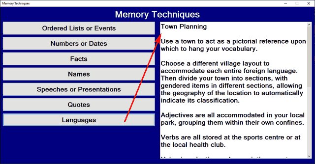
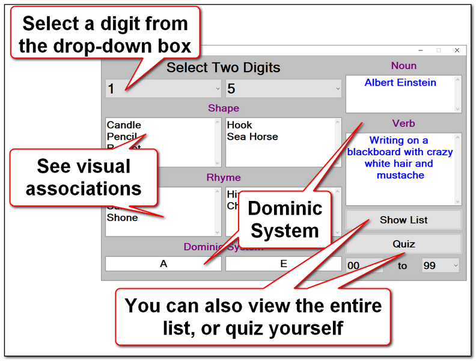
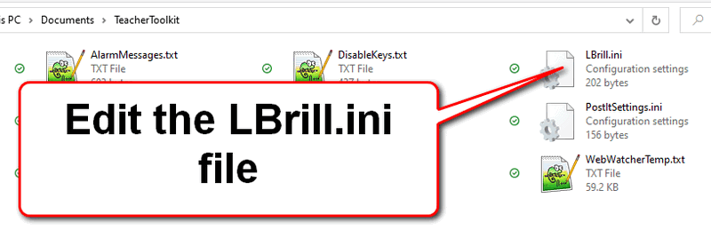

Learning Brilliance
The Learning Brilliance menu item utilises systems to enhance long-term memory and recall.

Number Images uses the famous Dominic System for memorising numbers and dates:

Top tip:
If you would like to replace any of the associations with your own personal ones, you can do this by entering the Settings Folder:
...and editing the LBrill.ini file manually:
